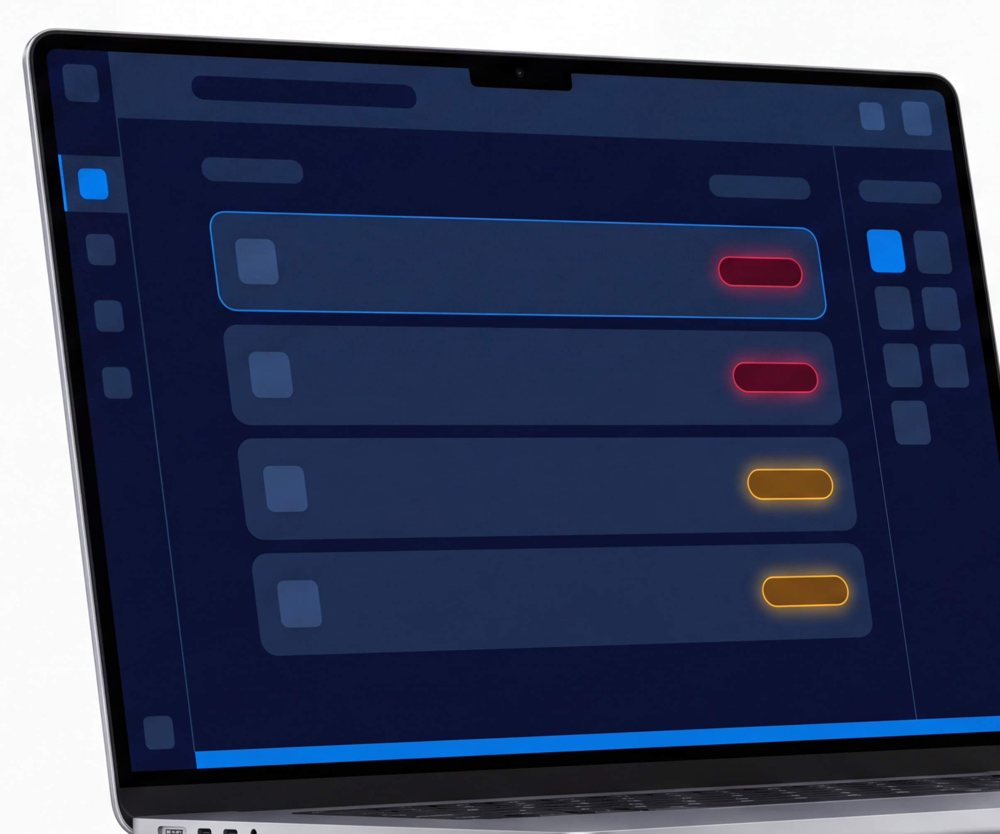

Book a Consultation
Know The Breach
Before It Happens
One queue for every channel.
Every ticket carries its own countdown.
Email
SMS
Viber
Web
Phone

Breach prediction
One queue, ranked by urgency
- P1 to P4 priority with a live countdown
- Sentiment flagged before escalation
- Skill-based routing to the right agent
bits_inquiries@boundlessits.com
boundlessits.com